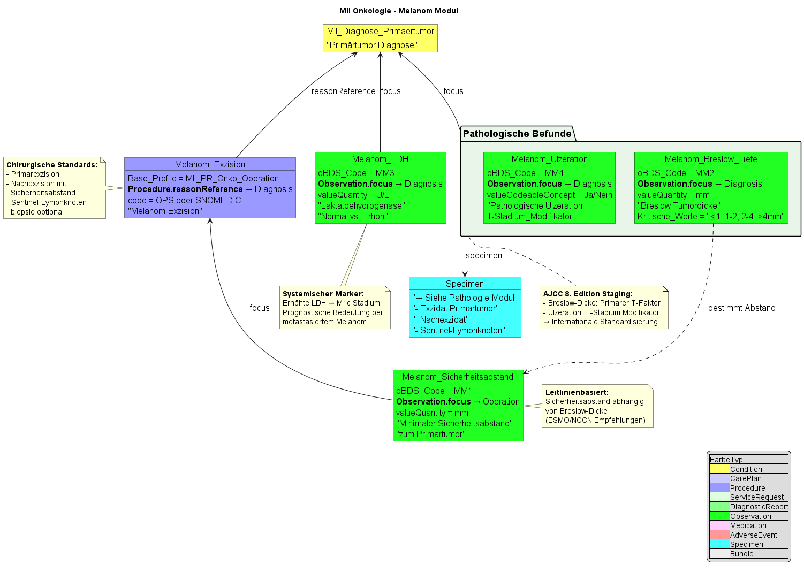

MII IG Kerndatensatz-Modul Onkologie - Local Development build (v2026.0.3) built by the FHIR (HL7® FHIR® Standard) Build Tools. See the Directory of published versions
Malignes Melanom
Die Melanom-spezifischen Profile erweitern das MII KDS Onkologie Modul um spezielle Datenelemente für das maligne Melanom gemäß den Anforderungen der organspezifischen Module der ADT/GEKID-Basisdokumentation.
Übersicht der Melanom-spezifischen Profile

Melanom-spezifische Datenelemente
Die Melanom-Module umfassen folgende spezifische klinische Parameter:
Breslow-Tiefe
- Vertikale Tumordicke in Millimetern
- Wichtigster prognostischer Faktor beim Melanom
- LOINC: 39092-1 "Breslow depth"
Ulzeration
- Vorhandensein einer Ulzeration des Primärtumors
- Beeinflusst die TNM-Klassifikation
- SNOMED CT: 385324008 "Tumor ulceration present"
Sicherheitsabstand
- Chirurgischer horizontaler Sicherheitsabstand bei der Exzision
- In Millimetern dokumentiert
- Qualitätsindikator für die operative Therapie
LDH (Laktatdehydrogenase)
- Serummarker für Tumorlast
- Wichtig für Stadiumseinteilung (M1c/M1d)
- LOINC: 2532-0 "Lactate dehydrogenase[Enyzmatic activity/volume] in Serum or Plasma"
Klinische Verwendung
Diese Profile werden typischerweise in folgenden Szenarien verwendet:
- Primärdiagnostik: Dokumentation der initialen Tumorcharakteristika
- Staging: Breslow-Tiefe und Ulzeration sind essentiell für die TNM-Klassifikation
- Therapieplanung: Sicherheitsabstand basiert auf Breslow-Tiefe
- Verlaufskontrolle: LDH als Verlaufsparameter bei metastasiertem Melanom
Integration mit Basisprofilen
Alle Melanom-spezifischen Profile:
- Basieren auf der FHIR Observation-Ressource
- Referenzieren die Primärdiagnose über
focus
- Sind in Transaction-Bundles integrierbar
- Unterstützen die oBDS-Dokumentationsanforderungen
Beispiel-Bundle
Ein vollständiges Beispiel-Bundle für Melanom-Patienten ist verfügbar unter:
Das Bundle demonstriert die Verwendung aller Melanom-spezifischen Profile in einem realistischen klinischen Kontext.
Beispiel